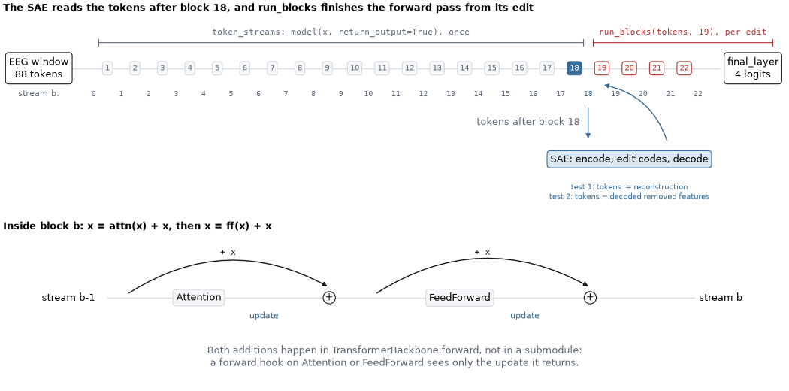
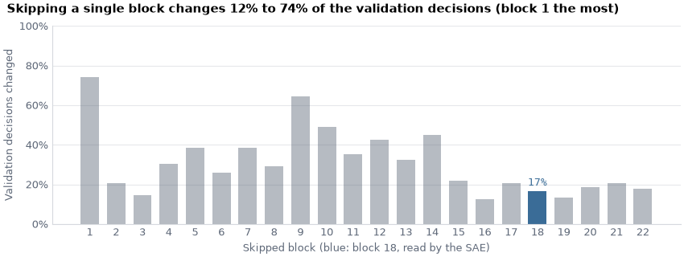
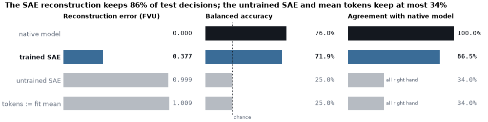
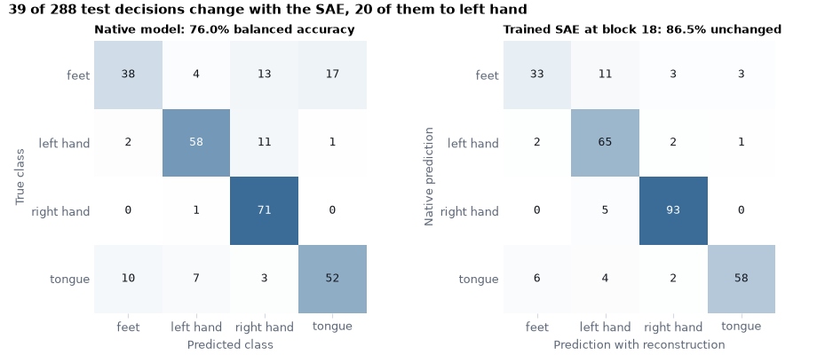
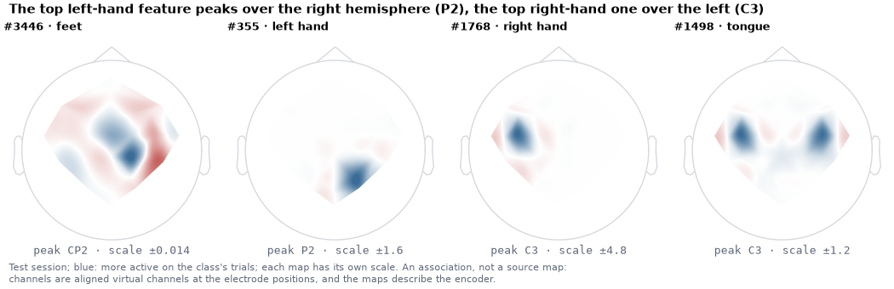
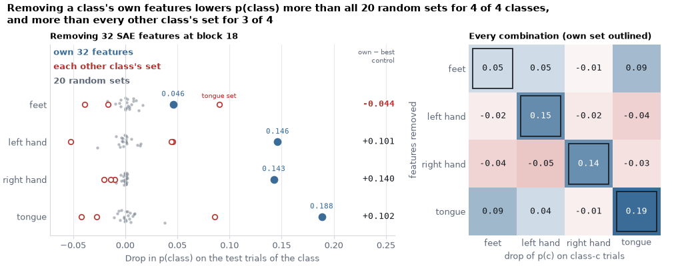

Note
Go to the end to download the full example code.
Sparse feature interventions in a pretrained REVE#
A sparse autoencoder (SAE) rewrites a network’s activations as a sum of a few features taken from a learned dictionary. A dictionary can reconstruct the activations well and still be made of directions that the classifier never reads, so a good reconstruction alone does not tell whether the features matter. This tutorial tests whether a sparse dictionary fitted to a frozen pretrained EEG transformer can expose features that its classifier actually uses. To address this question, we run two tests on a session recorded on another day:
Does the dictionary preserve what the model computes? We substitute the reconstruction for the tokens of one block and count the decisions that stay the same, against an untrained dictionary and mean tokens.
Does the model use the features selected for a class for that class? We remove the features most selective for a class and measure the drop in the probability of that class, against random feature sets and the sets selected for the other classes.
We keep the encoder of the pretrained REVE EEG
foundation model [1] frozen and train only its linear classification head on
one subject of the BCI Competition IV 2a motor-imagery dataset (BNCI2014_001
via MOABB). We then fit a Top-K SAE to the token embeddings of one
transformer block with SAE Lens
and intervene on the learned features while the model classifies the test
session. Braindecode supplies the data pipeline, the pretrained model and the
classifier wrapper, MOABB the Euclidean alignment, SAE Lens the dictionary
with its Top-K activation, losses and training loop, and scikit-learn the
metrics.
We use three splits, and no choice depends on the test session. The first four runs of the training session (fit) train the head and the dictionary. Its last two runs (validation) were used to choose the model setup, the block and the dictionary size. The test session, recorded on a different day, is used only for the final evaluation. All numbers come from a single subject, a single seed, a frozen encoder and a short SAE run. They describe this run, not REVE or motor imagery in general, and support no scientific claim.
This example needs the optional SAE Lens dependency, installed with
pip install 'braindecode[sae]' (or pip install sae-lens==6.51.3 in a
source checkout), and MOABB 1.6 or later for Euclidean alignment. SAE Lens
brings a language-model dependency stack, but no language model or pretrained
SAE is used here. The REVE-base weights (brain-bzh/reve-base, about
277 MB) are downloaded from the Hugging Face Hub the first time the example
runs. They are distributed under the REVE Responsible Use License, which you
accept by downloading them. REVE’s electrode position bank is a small file
that is cached in the MNE data directory.
# Authors: Vandit Shah <shahvanditt@gmail.com>
# Bruno Aristimunha <b.aristimunha@gmail.com>
# License: BSD (3-clause)
import copy
import einops
import matplotlib.pyplot as plt
import mne
import numpy as np
import torch
from matplotlib.colors import LinearSegmentedColormap
from matplotlib.patches import Rectangle
from moabb.datasets.preprocessing import EuclideanAlignment
from sae_lens.config import LoggingConfig, SAETrainerConfig
from sae_lens.saes.topk_sae import TopKTrainingSAE, TopKTrainingSAEConfig
from sae_lens.training.sae_trainer import SAETrainer
from sklearn.feature_selection import r_regression
from sklearn.metrics import (
ConfusionMatrixDisplay,
accuracy_score,
balanced_accuracy_score,
r2_score,
)
from sklearn.preprocessing import scale as standard_scale
from skorch.helper import SliceDataset
from skorch.utils import to_tensor
from braindecode import EEGClassifier
from braindecode.datasets import MOABBDataset
from braindecode.models import REVE
from braindecode.preprocessing import (
Preprocessor,
create_windows_from_events,
preprocess,
)
from braindecode.util import set_random_seeds
The figures use the colors of the Braindecode documentation: the result in blue, the native model in ink, controls in muted slate, and the pretrained blocks that finish an edited forward pass (and the other classes’ feature sets) in red.
Loading and preparing the data#
Loading#
We use subject 3 of BCI Competition IV 2a (BNCI2014_001), the recording used in Fine-tuning a Foundation Model (Signal-JEPA): 22 EEG channels at 250 Hz, four motor-imagery classes (feet, left hand, right hand, tongue) and two sessions of 288 trials, each made of six runs, recorded on different days.
subject_id = 3
dataset = MOABBDataset(dataset_name="BNCI2014_001", subject_ids=[subject_id])
/opt/hostedtoolcache/Python/3.12.14/x64/lib/python3.12/site-packages/moabb/datasets/bnci/base.py:456: FutureWarning: Montage name 'standard_1005' is deprecated and will be removed in MNE 1.14. Use 'colin27_1005' instead.
montage = make_standard_montage("standard_1005")
/opt/hostedtoolcache/Python/3.12.14/x64/lib/python3.12/site-packages/moabb/datasets/bnci/base.py:456: FutureWarning: Montage name 'standard_1005' is deprecated and will be removed in MNE 1.14. Use 'colin27_1005' instead.
montage = make_standard_montage("standard_1005")
/opt/hostedtoolcache/Python/3.12.14/x64/lib/python3.12/site-packages/moabb/datasets/bnci/base.py:456: FutureWarning: Montage name 'standard_1005' is deprecated and will be removed in MNE 1.14. Use 'colin27_1005' instead.
montage = make_standard_montage("standard_1005")
/opt/hostedtoolcache/Python/3.12.14/x64/lib/python3.12/site-packages/moabb/datasets/bnci/base.py:456: FutureWarning: Montage name 'standard_1005' is deprecated and will be removed in MNE 1.14. Use 'colin27_1005' instead.
montage = make_standard_montage("standard_1005")
/opt/hostedtoolcache/Python/3.12.14/x64/lib/python3.12/site-packages/moabb/datasets/bnci/base.py:456: FutureWarning: Montage name 'standard_1005' is deprecated and will be removed in MNE 1.14. Use 'colin27_1005' instead.
montage = make_standard_montage("standard_1005")
/opt/hostedtoolcache/Python/3.12.14/x64/lib/python3.12/site-packages/moabb/datasets/bnci/base.py:456: FutureWarning: Montage name 'standard_1005' is deprecated and will be removed in MNE 1.14. Use 'colin27_1005' instead.
montage = make_standard_montage("standard_1005")
/opt/hostedtoolcache/Python/3.12.14/x64/lib/python3.12/site-packages/moabb/datasets/bnci/base.py:456: FutureWarning: Montage name 'standard_1005' is deprecated and will be removed in MNE 1.14. Use 'colin27_1005' instead.
montage = make_standard_montage("standard_1005")
/opt/hostedtoolcache/Python/3.12.14/x64/lib/python3.12/site-packages/moabb/datasets/bnci/base.py:456: FutureWarning: Montage name 'standard_1005' is deprecated and will be removed in MNE 1.14. Use 'colin27_1005' instead.
montage = make_standard_montage("standard_1005")
/opt/hostedtoolcache/Python/3.12.14/x64/lib/python3.12/site-packages/moabb/datasets/bnci/base.py:456: FutureWarning: Montage name 'standard_1005' is deprecated and will be removed in MNE 1.14. Use 'colin27_1005' instead.
montage = make_standard_montage("standard_1005")
/opt/hostedtoolcache/Python/3.12.14/x64/lib/python3.12/site-packages/moabb/datasets/bnci/base.py:456: FutureWarning: Montage name 'standard_1005' is deprecated and will be removed in MNE 1.14. Use 'colin27_1005' instead.
montage = make_standard_montage("standard_1005")
/opt/hostedtoolcache/Python/3.12.14/x64/lib/python3.12/site-packages/moabb/datasets/bnci/base.py:456: FutureWarning: Montage name 'standard_1005' is deprecated and will be removed in MNE 1.14. Use 'colin27_1005' instead.
montage = make_standard_montage("standard_1005")
/opt/hostedtoolcache/Python/3.12.14/x64/lib/python3.12/site-packages/moabb/datasets/bnci/base.py:456: FutureWarning: Montage name 'standard_1005' is deprecated and will be removed in MNE 1.14. Use 'colin27_1005' instead.
montage = make_standard_montage("standard_1005")
/opt/hostedtoolcache/Python/3.12.14/x64/lib/python3.12/site-packages/moabb/datasets/bnci/base.py:456: FutureWarning: Montage name 'standard_1005' is deprecated and will be removed in MNE 1.14. Use 'colin27_1005' instead.
montage = make_standard_montage("standard_1005")
/opt/hostedtoolcache/Python/3.12.14/x64/lib/python3.12/site-packages/moabb/datasets/bnci/base.py:456: FutureWarning: Montage name 'standard_1005' is deprecated and will be removed in MNE 1.14. Use 'colin27_1005' instead.
montage = make_standard_montage("standard_1005")
/opt/hostedtoolcache/Python/3.12.14/x64/lib/python3.12/site-packages/moabb/datasets/bnci/base.py:456: FutureWarning: Montage name 'standard_1005' is deprecated and will be removed in MNE 1.14. Use 'colin27_1005' instead.
montage = make_standard_montage("standard_1005")
/opt/hostedtoolcache/Python/3.12.14/x64/lib/python3.12/site-packages/moabb/datasets/bnci/base.py:456: FutureWarning: Montage name 'standard_1005' is deprecated and will be removed in MNE 1.14. Use 'colin27_1005' instead.
montage = make_standard_montage("standard_1005")
/opt/hostedtoolcache/Python/3.12.14/x64/lib/python3.12/site-packages/moabb/datasets/bnci/base.py:456: FutureWarning: Montage name 'standard_1005' is deprecated and will be removed in MNE 1.14. Use 'colin27_1005' instead.
montage = make_standard_montage("standard_1005")
/opt/hostedtoolcache/Python/3.12.14/x64/lib/python3.12/site-packages/moabb/datasets/bnci/base.py:456: FutureWarning: Montage name 'standard_1005' is deprecated and will be removed in MNE 1.14. Use 'colin27_1005' instead.
montage = make_standard_montage("standard_1005")
Preprocessing to match the pretraining#
REVE was pretrained on EEG band-passed between 0.5 and 99.5 Hz, sampled at
200 Hz, z-scored per channel over each recording and clipped at 15 standard
deviations. We apply the same steps to every run: the channel-wise z-score
is scikit-learn’s scale() and the clipping is
numpy.clip(). The z-score uses only the run’s own signal, and no
label.
preprocess(
dataset,
[
Preprocessor("pick_types", eeg=True, meg=False, stim=False),
Preprocessor("filter", l_freq=0.5, h_freq=99.5),
Preprocessor("resample", sfreq=200),
Preprocessor(standard_scale, channel_wise=True),
Preprocessor(lambda data: np.clip(data, -15, 15)),
],
)
/home/runner/work/braindecode/braindecode/braindecode/preprocessing/preprocess.py:78: UserWarning: apply_on_array can only be True if fn is a callable function. Automatically correcting to apply_on_array=False.
warn(
/home/runner/work/braindecode/braindecode/braindecode/preprocessing/preprocess.py:76: UserWarning: Preprocessing choices with lambda functions cannot be saved.
warn("Preprocessing choices with lambda functions cannot be saved.")
NOTE: pick_types() is a legacy function. New code should use inst.pick(...).
Filtering raw data in 1 contiguous segment
Setting up band-pass filter from 0.5 - 1e+02 Hz
FIR filter parameters
---------------------
Designing a one-pass, zero-phase, non-causal bandpass filter:
- Windowed time-domain design (firwin) method
- Hamming window with 0.0194 passband ripple and 53 dB stopband attenuation
- Lower passband edge: 0.50
- Lower transition bandwidth: 0.50 Hz (-6 dB cutoff frequency: 0.25 Hz)
- Upper passband edge: 99.50 Hz
- Upper transition bandwidth: 24.88 Hz (-6 dB cutoff frequency: 111.94 Hz)
- Filter length: 1651 samples (6.604 s)
NOTE: pick_types() is a legacy function. New code should use inst.pick(...).
Filtering raw data in 1 contiguous segment
Setting up band-pass filter from 0.5 - 1e+02 Hz
FIR filter parameters
---------------------
Designing a one-pass, zero-phase, non-causal bandpass filter:
- Windowed time-domain design (firwin) method
- Hamming window with 0.0194 passband ripple and 53 dB stopband attenuation
- Lower passband edge: 0.50
- Lower transition bandwidth: 0.50 Hz (-6 dB cutoff frequency: 0.25 Hz)
- Upper passband edge: 99.50 Hz
- Upper transition bandwidth: 24.88 Hz (-6 dB cutoff frequency: 111.94 Hz)
- Filter length: 1651 samples (6.604 s)
NOTE: pick_types() is a legacy function. New code should use inst.pick(...).
Filtering raw data in 1 contiguous segment
Setting up band-pass filter from 0.5 - 1e+02 Hz
FIR filter parameters
---------------------
Designing a one-pass, zero-phase, non-causal bandpass filter:
- Windowed time-domain design (firwin) method
- Hamming window with 0.0194 passband ripple and 53 dB stopband attenuation
- Lower passband edge: 0.50
- Lower transition bandwidth: 0.50 Hz (-6 dB cutoff frequency: 0.25 Hz)
- Upper passband edge: 99.50 Hz
- Upper transition bandwidth: 24.88 Hz (-6 dB cutoff frequency: 111.94 Hz)
- Filter length: 1651 samples (6.604 s)
NOTE: pick_types() is a legacy function. New code should use inst.pick(...).
Filtering raw data in 1 contiguous segment
Setting up band-pass filter from 0.5 - 1e+02 Hz
FIR filter parameters
---------------------
Designing a one-pass, zero-phase, non-causal bandpass filter:
- Windowed time-domain design (firwin) method
- Hamming window with 0.0194 passband ripple and 53 dB stopband attenuation
- Lower passband edge: 0.50
- Lower transition bandwidth: 0.50 Hz (-6 dB cutoff frequency: 0.25 Hz)
- Upper passband edge: 99.50 Hz
- Upper transition bandwidth: 24.88 Hz (-6 dB cutoff frequency: 111.94 Hz)
- Filter length: 1651 samples (6.604 s)
NOTE: pick_types() is a legacy function. New code should use inst.pick(...).
Filtering raw data in 1 contiguous segment
Setting up band-pass filter from 0.5 - 1e+02 Hz
FIR filter parameters
---------------------
Designing a one-pass, zero-phase, non-causal bandpass filter:
- Windowed time-domain design (firwin) method
- Hamming window with 0.0194 passband ripple and 53 dB stopband attenuation
- Lower passband edge: 0.50
- Lower transition bandwidth: 0.50 Hz (-6 dB cutoff frequency: 0.25 Hz)
- Upper passband edge: 99.50 Hz
- Upper transition bandwidth: 24.88 Hz (-6 dB cutoff frequency: 111.94 Hz)
- Filter length: 1651 samples (6.604 s)
NOTE: pick_types() is a legacy function. New code should use inst.pick(...).
Filtering raw data in 1 contiguous segment
Setting up band-pass filter from 0.5 - 1e+02 Hz
FIR filter parameters
---------------------
Designing a one-pass, zero-phase, non-causal bandpass filter:
- Windowed time-domain design (firwin) method
- Hamming window with 0.0194 passband ripple and 53 dB stopband attenuation
- Lower passband edge: 0.50
- Lower transition bandwidth: 0.50 Hz (-6 dB cutoff frequency: 0.25 Hz)
- Upper passband edge: 99.50 Hz
- Upper transition bandwidth: 24.88 Hz (-6 dB cutoff frequency: 111.94 Hz)
- Filter length: 1651 samples (6.604 s)
NOTE: pick_types() is a legacy function. New code should use inst.pick(...).
Filtering raw data in 1 contiguous segment
Setting up band-pass filter from 0.5 - 1e+02 Hz
FIR filter parameters
---------------------
Designing a one-pass, zero-phase, non-causal bandpass filter:
- Windowed time-domain design (firwin) method
- Hamming window with 0.0194 passband ripple and 53 dB stopband attenuation
- Lower passband edge: 0.50
- Lower transition bandwidth: 0.50 Hz (-6 dB cutoff frequency: 0.25 Hz)
- Upper passband edge: 99.50 Hz
- Upper transition bandwidth: 24.88 Hz (-6 dB cutoff frequency: 111.94 Hz)
- Filter length: 1651 samples (6.604 s)
NOTE: pick_types() is a legacy function. New code should use inst.pick(...).
Filtering raw data in 1 contiguous segment
Setting up band-pass filter from 0.5 - 1e+02 Hz
FIR filter parameters
---------------------
Designing a one-pass, zero-phase, non-causal bandpass filter:
- Windowed time-domain design (firwin) method
- Hamming window with 0.0194 passband ripple and 53 dB stopband attenuation
- Lower passband edge: 0.50
- Lower transition bandwidth: 0.50 Hz (-6 dB cutoff frequency: 0.25 Hz)
- Upper passband edge: 99.50 Hz
- Upper transition bandwidth: 24.88 Hz (-6 dB cutoff frequency: 111.94 Hz)
- Filter length: 1651 samples (6.604 s)
NOTE: pick_types() is a legacy function. New code should use inst.pick(...).
Filtering raw data in 1 contiguous segment
Setting up band-pass filter from 0.5 - 1e+02 Hz
FIR filter parameters
---------------------
Designing a one-pass, zero-phase, non-causal bandpass filter:
- Windowed time-domain design (firwin) method
- Hamming window with 0.0194 passband ripple and 53 dB stopband attenuation
- Lower passband edge: 0.50
- Lower transition bandwidth: 0.50 Hz (-6 dB cutoff frequency: 0.25 Hz)
- Upper passband edge: 99.50 Hz
- Upper transition bandwidth: 24.88 Hz (-6 dB cutoff frequency: 111.94 Hz)
- Filter length: 1651 samples (6.604 s)
NOTE: pick_types() is a legacy function. New code should use inst.pick(...).
Filtering raw data in 1 contiguous segment
Setting up band-pass filter from 0.5 - 1e+02 Hz
FIR filter parameters
---------------------
Designing a one-pass, zero-phase, non-causal bandpass filter:
- Windowed time-domain design (firwin) method
- Hamming window with 0.0194 passband ripple and 53 dB stopband attenuation
- Lower passband edge: 0.50
- Lower transition bandwidth: 0.50 Hz (-6 dB cutoff frequency: 0.25 Hz)
- Upper passband edge: 99.50 Hz
- Upper transition bandwidth: 24.88 Hz (-6 dB cutoff frequency: 111.94 Hz)
- Filter length: 1651 samples (6.604 s)
NOTE: pick_types() is a legacy function. New code should use inst.pick(...).
Filtering raw data in 1 contiguous segment
Setting up band-pass filter from 0.5 - 1e+02 Hz
FIR filter parameters
---------------------
Designing a one-pass, zero-phase, non-causal bandpass filter:
- Windowed time-domain design (firwin) method
- Hamming window with 0.0194 passband ripple and 53 dB stopband attenuation
- Lower passband edge: 0.50
- Lower transition bandwidth: 0.50 Hz (-6 dB cutoff frequency: 0.25 Hz)
- Upper passband edge: 99.50 Hz
- Upper transition bandwidth: 24.88 Hz (-6 dB cutoff frequency: 111.94 Hz)
- Filter length: 1651 samples (6.604 s)
NOTE: pick_types() is a legacy function. New code should use inst.pick(...).
Filtering raw data in 1 contiguous segment
Setting up band-pass filter from 0.5 - 1e+02 Hz
FIR filter parameters
---------------------
Designing a one-pass, zero-phase, non-causal bandpass filter:
- Windowed time-domain design (firwin) method
- Hamming window with 0.0194 passband ripple and 53 dB stopband attenuation
- Lower passband edge: 0.50
- Lower transition bandwidth: 0.50 Hz (-6 dB cutoff frequency: 0.25 Hz)
- Upper passband edge: 99.50 Hz
- Upper transition bandwidth: 24.88 Hz (-6 dB cutoff frequency: 111.94 Hz)
- Filter length: 1651 samples (6.604 s)
Windowing and Euclidean alignment#
Each window covers the 4-s motor-imagery period that MOABB defines after the cue (800 samples at 200 Hz).
The spatial covariance of the EEG drifts between sessions. As in the REVE
evaluation on this dataset, we reduce this drift with Euclidean alignment
(EA) [2], using MOABB’s EuclideanAlignment.
Every window of a session is multiplied by the inverse square root of the
session’s mean spatial covariance, so that the windows of each session have
an identity mean covariance. Junqueira et al. [3] evaluated EA
systematically with deep learning models for EEG decoding. We use the sample
covariance (estimator="scm"), as in [2]: MOABB’s default Ledoit-Wolf
shrinkage is meant for short or noisy trials, and 800 samples of 22 channels
are neither.
The alignment is fitted once per session on that session’s windows,
without their labels: fit_transform on the training session (fit and
validation runs together), and separately on the test session. The head and
the SAE are fitted on the training session only, so no statistic of the
test session enters their fitting. The alignment of the test session is,
however, transductive: its windows are aligned with statistics computed on
all of them, as in REVE’s evaluation. An online decoder would have to
estimate these statistics from the trials seen so far.
windows_dataset = create_windows_from_events(
dataset,
trial_start_offset_samples=0,
trial_stop_offset_samples=0,
preload=True,
)
sessions = windows_dataset.split("session")
x_train, x_test = (
EuclideanAlignment(estimator="scm")
.fit_transform(SliceDataset(sessions[name], idx=0))
.astype(np.float32)
for name in ("0train", "1test")
)
Splits#
The first four runs of session "0train" form the fit split, its last
two runs the validation split, and session "1test" the test split. The
labels and run numbers come from the windows’ metadata, and skorch’s
to_tensor() turns the aligned arrays into tensors.
train_metadata = sessions["0train"].get_metadata()
in_validation = train_metadata["run"].isin(["4", "5"]).to_numpy()
y_train = train_metadata["target"].to_numpy()
y_fit, y_val = y_train[~in_validation], y_train[in_validation]
y_test = sessions["1test"].get_metadata()["target"].to_numpy()
x_fit, x_val, x_test = to_tensor(
[x_train[~in_validation], x_train[in_validation], x_test], device="cpu"
)
# BCI IV 2a labels in MOABB's alphabetical order; the position is the class id.
LABELS = ("feet", "left_hand", "right_hand", "tongue")
pretty = [label.replace("_", " ") for label in LABELS]
n_chans, n_times = x_fit.shape[1:]
raw_info = dataset.datasets[0].raw.info
print(
f"Windows: fit {len(x_fit)}, validation {len(x_val)}, test {len(x_test)}; "
f"each {n_chans} channels x {n_times} samples"
)
Windows: fit 192, validation 96, test 288; each 22 channels x 800 samples
The pretrained REVE with a frozen encoder#
Loading the weights#
Loading and Adapting Pretrained Foundation Models shows the general from_pretrained
pattern. REVE looks up the 3D position of every electrode by name in its
position bank, so we pass the channel names through chs_info. A 4-s
window at 200 Hz gives four overlapping 1-s patches per channel, i.e.
22 × 4 = 88 tokens of dimension 512. The checkpoint holds the encoder;
the classification head (final_layer) is newly initialized. We freeze
every weight, so the encoder is used exactly as pretrained.
set_random_seeds(seed=20240205, cuda=False)
model = REVE.from_pretrained(
"brain-bzh/reve-base",
n_outputs=len(LABELS),
n_chans=n_chans,
n_times=n_times,
sfreq=200,
chs_info=[{"ch_name": name} for name in raw_info["ch_names"]],
).eval()
model.requires_grad_(False)
n_blocks = len(model.transformer.layers)
n_params = sum(parameter.numel() for parameter in model.parameters())
print(f"REVE-base: {n_params / 1e6:.1f} M parameters, {n_blocks} blocks")
REVE-base: 69.5 M parameters, 22 blocks
Reading and editing the token stream#
The SAE works on REVE’s token stream: the (windows, 88, 512) tensor
that every block reads and rewrites. We number the streams by block: stream
0 is the patch embeddings plus the positional encoding, which enter block 1,
and stream b is the output of block b. The head reads stream 22.
Braindecode’s capture_activations() and
run_with_activation_substitution() read
and replace the output of a submodule through a forward hook. They cannot
reach REVE’s stream, because of how a block is written. The loop in
TransformerBackbone.forward runs x = attn(x) + x and then
x = ff(x) + x. The attention and feed-forward modules return only the
update that is added, and the residual additions that produce the stream
happen in the loop, not in a submodule. A hook on ff therefore
captures an update, not the tokens after the block. If a pre-hook replaced
the input of the next block instead, that block’s skip connection
(+ x) would still add the original tokens.
We therefore work with the stream directly, with two small functions that use only REVE’s own API and pretrained layers:
token_streamscallsmodel(x, return_output=True), which returns all 23 streams, in batches, and keeps the ones we ask for;run_blocksresumes the forward pass from a stream. It applies the remaining pretrained blocks with the same two residual additions, then the head. Resuming from block 18’s output means that no edit needs to recompute blocks 1–18.
The figure shows where each step acts. Blocks 1–18 run once, and their
output is cached. The SAE reads and edits the stream at block 18
(blue), in one of two ways: the first test replaces the tokens by their
reconstruction, and the second takes away only the decoded contribution of
the removed features. run_blocks then applies only the red blocks
again, once per edit. The lower panel shows why a hook cannot do this: what a
submodule returns is the update, and the stream itself only exists in the
loop. After training the head, we check that run_blocks reproduces
model(x).
block = 18
fig, (ax, ax_block) = plt.subplots(2, 1, figsize=(10.5, 5.2), height_ratios=[1.3, 1])
box = dict(boxstyle="round,pad=0.35", lw=0.8)
arrow = dict(arrowstyle="-|>", color=ACCENT, lw=1)
ax.plot([-0.4, n_blocks + 1.3], [0, 0], color="#d6d9de", lw=1, zorder=0)
for x, text in (
(-1.5, "EEG window\n88 tokens"),
(n_blocks + 2.5, "final_layer\n4 logits"),
):
ax.text(x, 0, text, ha="center", va="center", bbox=box | {"fc": "white", "ec": INK})
ax.text(-1.5, -0.6, "stream b:", ha="center", fontsize=8, color=SUBTLE)
for b in range(n_blocks + 1):
color = ACCENT if b == block else SUBTLE
ax.text(
b + 0.5, -0.6, b, ha="center", family="monospace", fontsize=7.5, color=color
)
for b in range(1, n_blocks + 1):
fc, ec, color = ("#f6f7f8", "#d6d9de", SUBTLE) # blocks the edit never reruns
if b >= block:
fc, ec, color = (ACCENT, ACCENT, "white") if b == block else ("white", RED, RED)
style = box | {"fc": fc, "ec": ec}
ax.text(b, 0, b, ha="center", va="center", fontsize=7.5, color=color, bbox=style)
for start, end, color, text in ( # what each function computes, and how often
(0.6, block + 0.4, SUBTLE, "token_streams: model(x, return_output=True), once"),
(block + 0.6, n_blocks + 3.3, RED, f"run_blocks(tokens, {block + 1}), per edit"),
):
ax.annotate(
"",
xy=(start, 0.55),
xytext=(end, 0.55),
arrowprops=dict(arrowstyle="|-|", color=color, lw=0.8, mutation_scale=3),
)
ax.text(
(start + end) / 2,
0.72,
text,
ha="center",
color=color,
fontsize=8,
family="monospace",
)
ax.annotate("", xy=(block + 0.5, -1.55), xytext=(block + 0.5, -0.8), arrowprops=arrow)
ax.text(
block + 0.2,
-1.15,
f"tokens after block {block}",
ha="right",
va="center",
color=SUBTLE,
)
ax.text(
block + 2,
-1.95,
"SAE: encode, edit codes, decode",
ha="center",
va="center",
bbox=box | {"fc": "#dde7f0", "ec": ACCENT},
)
ax.annotate(
"",
xy=(block + 1, -0.35),
xytext=(block + 3.4, -1.6),
arrowprops=arrow | {"connectionstyle": "arc3,rad=0.3"},
)
ax.text(
block + 2,
-2.45,
"test 1: tokens := reconstruction\ntest 2: tokens − decoded removed features",
ha="center",
va="top",
fontsize=7.5,
color=ACCENT,
)
ax.set(xlim=(-2.8, n_blocks + 3.7), ylim=(-3.15, 1.1))
ax.set_title(
f"The SAE reads the tokens after block {block}, and run_blocks finishes the "
"forward pass from its edit"
)
ax.axis("off")
steps = ("stream b-1", "Attention", "+", "FeedForward", "+", "stream b")
modules = box | {"fc": "#f6f7f8", "ec": "#d6d9de"}
additions = box | {"boxstyle": "circle,pad=0.15", "fc": "white", "ec": INK}
ax_block.plot([0.6, 9.6], [0, 0], color="#d6d9de", lw=1, zorder=0)
for x, label in zip(range(0, 12, 2), steps):
frame = additions if label == "+" else modules if label[0].isupper() else None
ax_block.text(x, 0, label, ha="center", va="center", bbox=frame)
for start, end in ((0.9, 4), (4.7, 8)):
ax_block.annotate(
"",
xy=(end, 0.15),
xytext=(start, 0.05),
arrowprops=arrow | {"color": INK, "connectionstyle": "arc3,rad=-0.3"},
)
ax_block.text(
(start + end) / 2, 0.62, "+ x", ha="center", family="monospace", fontsize=8
)
ax_block.text(
end - 1, -0.2, "update", ha="center", va="top", fontsize=8, color=ACCENT
)
ax_block.text(
5,
-0.85,
"Both additions happen in TransformerBackbone.forward, not in a submodule:\n"
"a forward hook on Attention or FeedForward sees only the update it returns.",
ha="center",
va="center",
color=SUBTLE,
)
ax_block.set(xlim=(-1, 11), ylim=(-1.3, 0.9))
ax_block.set_title("Inside block b: x = attn(x) + x, then x = ff(x) + x")
ax_block.axis("off")
def token_streams(x, keep, batch_size=32):
"""Map stream index to tokens; 0 enters block 1 and ``b`` leaves block ``b``."""
kept = {index: [] for index in keep}
with torch.no_grad():
for batch in x.split(batch_size):
streams = model(batch, return_output=True)
for index in keep:
kept[index].append(streams[index])
return {index: torch.cat(parts) for index, parts in kept.items()}
def run_blocks(tokens, first):
"""Apply blocks ``first`` to 22 (counted from 1), then the head."""
for attn, ff in model.transformer.layers[first - 1 :]:
tokens = attn(tokens) + tokens
tokens = ff(tokens) + tokens
return model.final_layer(tokens)

We keep the output of block 18, where the dictionary will be fitted (the choice is explained below), and of the last block, which the head reads. For the validation windows we keep every stream, for the block check below.
fit_tokens = token_streams(x_fit, keep=(block, n_blocks))
val_tokens = token_streams(x_val, keep=range(n_blocks + 1))
test_tokens = token_streams(x_test, keep=(block, n_blocks))
Training the linear head#
Because the encoder is frozen, the last block’s tokens are computed once
and only final_layer (a layer normalization of the flattened tokens and
a linear layer) is trained. EEGClassifier trains it on
the cached fit tokens with full-batch AdamW, which takes a few seconds on a
CPU. We report balanced accuracy with scikit-learn. Every class has as many
trials as the others in each split, so it equals plain accuracy here.
model.final_layer.requires_grad_(True)
head = EEGClassifier(
model.final_layer,
optimizer=torch.optim.AdamW,
optimizer__lr=1e-3,
optimizer__weight_decay=0.1,
batch_size=len(x_fit),
max_epochs=300,
train_split=None,
classes=list(range(len(LABELS))),
device="cpu",
verbose=0,
)
head.fit(fit_tokens[n_blocks], y_fit)
model.requires_grad_(False).eval()
val_pred = head.predict(val_tokens[n_blocks])
with torch.no_grad():
baseline_logits = model.final_layer(test_tokens[n_blocks])
difference = run_blocks(test_tokens[block][:8], block + 1) - model(x_test[:8])
baseline_pred = baseline_logits.argmax(1).numpy()
print(
f"Largest difference between run_blocks and model(x): {difference.abs().max():.1e}"
)
print(
"Balanced accuracy (chance 25%): "
f"fit {balanced_accuracy_score(y_fit, head.predict(fit_tokens[n_blocks])):.1%}, "
f"validation {balanced_accuracy_score(y_val, val_pred):.1%}, "
f"test {balanced_accuracy_score(y_test, baseline_pred):.1%}"
)
Largest difference between run_blocks and model(x): 0.0e+00
Balanced accuracy (chance 25%): fit 100.0%, validation 58.3%, test 76.0%
Every block influences the decision#
To decide where the dictionary can be fitted, we first measure how much
each block contributes to the decision. We skip one block at a time, i.e.
pass its input unchanged to the next block, and count how many validation
predictions stay the same: skipping block b means feeding stream
b - 1 to run_blocks from block b + 1. Only the validation
windows are used, because this check informs a modelling choice. The
figure shows the complement, the share of decisions that change, with the
block the SAE reads in blue.
with torch.no_grad():
unchanged = np.array(
[
accuracy_score(val_pred, run_blocks(val_tokens[b - 1], b + 1).argmax(1))
for b in range(1, n_blocks + 1)
]
)
for start in range(0, n_blocks, 11):
print(
"Unchanged when skipped: "
+ ", ".join(
f"{b}: {unchanged[b - 1]:.0%}" for b in range(start + 1, start + 12)
)
)
changed = 1 - unchanged
blocks = np.arange(1, n_blocks + 1)
fig, ax = plt.subplots(figsize=(8.5, 3.2))
ax.bar(
blocks, changed, width=0.7, color=[ACCENT if b == block else MUTED for b in blocks]
)
ax.text( # label only the block the SAE reads; the axis gives the others
block,
changed[block - 1] + 0.015,
f"{changed[block - 1]:.0%}",
ha="center",
va="bottom",
family="monospace",
color=ACCENT,
)
ax.set(
xticks=blocks,
ylim=(0, 1),
xlabel=f"Skipped block (blue: block {block}, read by the SAE)",
ylabel="Validation decisions changed",
)
ax.yaxis.set_major_formatter("{x:.0%}")
ax.tick_params(axis="x", length=0)
fig.suptitle(
f"Skipping a single block changes {changed.min():.0%} to {changed.max():.0%} of "
f"the validation decisions (block {blocks[changed.argmax()]} the most)",
x=0.01,
ha="left",
)
plt.show()

Unchanged when skipped: 1: 26%, 2: 79%, 3: 85%, 4: 70%, 5: 61%, 6: 74%, 7: 61%, 8: 71%, 9: 35%, 10: 51%, 11: 65%
Unchanged when skipped: 12: 57%, 13: 68%, 14: 55%, 15: 78%, 16: 88%, 17: 79%, 18: 83%, 19: 86%, 20: 81%, 21: 79%, 22: 82%
No block can be skipped without changing some decisions. When we ran this example, skipping the first block changed about three quarters of the validation decisions and skipping block 9 about two thirds, while each of the last eight blocks still changed 12–22% of them. The head explains why: unlike a head that reads a single classification token, REVE’s flattening head sees every token of the last block, and each block rewrites all tokens. An edit at block 18 thus passes through four more blocks, which can strengthen or compensate for it, before it reaches the head.
The settings were fixed on the training session#
The choices below were made on the validation runs only, before the test session was used, in runs that are not part of this example:
Model setup. With Euclidean alignment and the 300 training epochs used here, the frozen encoder with this flattening head reached 58–64% validation accuracy over three head initializations. The attention-pooling head (
attention_pooling=True) reached 45–50%. Over all the training lengths we tried (50–300 epochs, and up to 1000 for attention pooling), the ranges were 47–64% and 45–50%. Without alignment they were 31–38% and 27–32%. Fine-tuning the last two blocks as well, tried without alignment, reached at most 31% and costs much more on a CPU.Block. We fitted SAEs with 2048 features and
k=32to the outputs of blocks 6, 10, 14 and 18, i.e. blocks followed by at least four others, so that an edit has to pass through attention layers before reaching the head. Feeding their reconstructions back into the model kept 46%, 42%, 53% and 73% of the validation decisions, so we use block 18.Dictionary size. At block 18, 2048 features with
k=16, 2048 withk=32and 4096 withk=32kept 67%, 73% and 79% of the validation decisions. We fixed in advance that a larger dictionary had to be more than two points better to be preferred. 4096 features agreed on six more of the 96 validation windows, so we use them, although they take about twice as long to train and 201 of them were inactive on those windows.
The number of features removed per class (32) and of random control sets (20) were fixed in advance, so no setting depends on the test session.
Fitting an SAE to the block-18 tokens#
Capturing token embeddings#
Every token of block 18 is one training row. The per-coordinate mean and
standard deviation come from the fit tokens only. The SAE and every edit
below are torch operations, so we keep these statistics as tensors and
switch off SAE Lens’s own normalize_activations.
d_in = fit_tokens[block].shape[-1]
n_tokens = fit_tokens[block].shape[1]
n_patches = n_tokens // n_chans
fit_rows = fit_tokens[block].reshape(-1, d_in)
mean = fit_rows.mean(0)
std = fit_rows.std(0, correction=0).clamp_min(1e-6)
fit_scaled = (fit_rows - mean) / std
test_scaled = (test_tokens[block].reshape(-1, d_in) - mean) / std
print(f"Fit tokens: {tuple(fit_rows.shape)} ({n_tokens} per window)")
Fit tokens: (16896, 512) (88 per window)
Training the Top-K SAE#
SAE Lens’s SAETrainer consumes any
iterator of tensor batches; its own activation store needs a language
model, so a three-line generator samples fit tokens with replacement. We
learn 4096 features (eight times the token width) with at most k=32
active per token, for 3000 updates on batches of 256 tokens. A copy made
before training serves as an untrained control with the same
initialization.
batch_size = 256
n_updates = 3000
k_active = 32
torch.manual_seed(20240205)
def activation_batches():
while True:
yield fit_scaled[torch.randint(len(fit_scaled), (batch_size,))]
sae = TopKTrainingSAE(
TopKTrainingSAEConfig(
d_in=d_in,
d_sae=8 * d_in,
k=k_active,
device="cpu",
dtype="float32",
normalize_activations="none",
reshape_activations="none",
apply_b_dec_to_input=True,
rescale_acts_by_decoder_norm=True,
),
use_error_term=False,
)
untrained_sae = copy.deepcopy(sae).eval()
SAETrainer(
cfg=SAETrainerConfig(
total_training_samples=n_updates * batch_size,
train_batch_size_samples=batch_size,
device="cpu",
autocast=False,
lr=1e-3,
lr_end=1e-4,
logger=LoggingConfig(log_to_wandb=False),
n_checkpoints=0,
save_final_checkpoint=False,
),
sae=sae,
data_provider=activation_batches(),
).fit()
_ = sae.eval()
Training SAE: 0%| | 0/768000 [00:00<?, ?it/s]
100| mse_loss: 222.40825 | auxiliary_reconstruction_loss: 0.00000: 0%| | 0/768000 [00:04<?, ?it/s]
100| mse_loss: 222.40825 | auxiliary_reconstruction_loss: 0.00000: 3%|▎ | 25600/768000 [00:04<02:00, 6168.35it/s]
200| mse_loss: 184.21700 | auxiliary_reconstruction_loss: 0.00000: 3%|▎ | 25600/768000 [00:08<02:00, 6168.35it/s]
200| mse_loss: 184.21700 | auxiliary_reconstruction_loss: 0.00000: 7%|▋ | 51200/768000 [00:08<01:55, 6191.26it/s]
300| mse_loss: 168.21899 | auxiliary_reconstruction_loss: 0.00000: 7%|▋ | 51200/768000 [00:12<01:55, 6191.26it/s]
300| mse_loss: 168.21899 | auxiliary_reconstruction_loss: 0.00000: 10%|█ | 76800/768000 [00:12<01:51, 6183.30it/s]
400| mse_loss: 159.71022 | auxiliary_reconstruction_loss: 0.00000: 10%|█ | 76800/768000 [00:16<01:51, 6183.30it/s]
400| mse_loss: 159.71022 | auxiliary_reconstruction_loss: 0.00000: 13%|█▎ | 102400/768000 [00:16<01:47, 6220.07it/s]
500| mse_loss: 154.69640 | auxiliary_reconstruction_loss: 0.00000: 13%|█▎ | 102400/768000 [00:20<01:47, 6220.07it/s]
500| mse_loss: 154.69640 | auxiliary_reconstruction_loss: 0.00000: 17%|█▋ | 128000/768000 [00:20<01:44, 6139.25it/s]
600| mse_loss: 146.15201 | auxiliary_reconstruction_loss: 0.00000: 17%|█▋ | 128000/768000 [00:24<01:44, 6139.25it/s]
600| mse_loss: 146.15201 | auxiliary_reconstruction_loss: 0.00000: 20%|██ | 153600/768000 [00:24<01:40, 6137.40it/s]
700| mse_loss: 141.84576 | auxiliary_reconstruction_loss: 0.00000: 20%|██ | 153600/768000 [00:29<01:40, 6137.40it/s]
700| mse_loss: 141.84576 | auxiliary_reconstruction_loss: 0.00000: 23%|██▎ | 179200/768000 [00:29<01:39, 5892.59it/s]
800| mse_loss: 137.08705 | auxiliary_reconstruction_loss: 0.00000: 23%|██▎ | 179200/768000 [00:35<01:39, 5892.59it/s]
800| mse_loss: 137.08705 | auxiliary_reconstruction_loss: 0.00000: 27%|██▋ | 204800/768000 [00:35<01:46, 5271.45it/s]
900| mse_loss: 137.99359 | auxiliary_reconstruction_loss: 0.00000: 27%|██▋ | 204800/768000 [00:41<01:46, 5271.45it/s]
900| mse_loss: 137.99359 | auxiliary_reconstruction_loss: 0.00000: 30%|███ | 230400/768000 [00:41<01:47, 5015.65it/s]
1000| mse_loss: 133.78415 | auxiliary_reconstruction_loss: 0.00000: 30%|███ | 230400/768000 [00:46<01:47, 5015.65it/s]
1000| mse_loss: 133.78415 | auxiliary_reconstruction_loss: 0.00000: 33%|███▎ | 256000/768000 [00:46<01:43, 4967.29it/s]
1100| mse_loss: 132.86147 | auxiliary_reconstruction_loss: 104.27695: 33%|███▎ | 256000/768000 [00:52<01:43, 4967.29it/s]
1100| mse_loss: 132.86147 | auxiliary_reconstruction_loss: 104.27695: 37%|███▋ | 281600/768000 [00:52<01:44, 4649.68it/s]
1200| mse_loss: 122.85665 | auxiliary_reconstruction_loss: 91.32703: 37%|███▋ | 281600/768000 [00:58<01:44, 4649.68it/s]
1200| mse_loss: 122.85665 | auxiliary_reconstruction_loss: 91.32703: 40%|████ | 307200/768000 [00:58<01:40, 4572.92it/s]
1300| mse_loss: 120.81947 | auxiliary_reconstruction_loss: 2.34538: 40%|████ | 307200/768000 [01:04<01:40, 4572.92it/s]
1300| mse_loss: 120.81947 | auxiliary_reconstruction_loss: 2.34538: 43%|████▎ | 332800/768000 [01:04<01:36, 4521.96it/s]
1400| mse_loss: 114.35446 | auxiliary_reconstruction_loss: 0.44644: 43%|████▎ | 332800/768000 [01:10<01:36, 4521.96it/s]
1400| mse_loss: 114.35446 | auxiliary_reconstruction_loss: 0.44644: 47%|████▋ | 358400/768000 [01:10<01:31, 4494.06it/s]
1500| mse_loss: 114.29478 | auxiliary_reconstruction_loss: 0.00000: 47%|████▋ | 358400/768000 [01:15<01:31, 4494.06it/s]
1500| mse_loss: 114.29478 | auxiliary_reconstruction_loss: 0.00000: 50%|█████ | 384000/768000 [01:15<01:21, 4687.39it/s]
1600| mse_loss: 107.35445 | auxiliary_reconstruction_loss: 0.41928: 50%|█████ | 384000/768000 [01:19<01:21, 4687.39it/s]
1600| mse_loss: 107.35445 | auxiliary_reconstruction_loss: 0.41928: 53%|█████▎ | 409600/768000 [01:19<01:13, 4867.58it/s]
1700| mse_loss: 98.93169 | auxiliary_reconstruction_loss: 0.77329: 53%|█████▎ | 409600/768000 [01:24<01:13, 4867.58it/s]
1700| mse_loss: 98.93169 | auxiliary_reconstruction_loss: 0.77329: 57%|█████▋ | 435200/768000 [01:24<01:07, 4956.78it/s]
1800| mse_loss: 96.43305 | auxiliary_reconstruction_loss: 0.75261: 57%|█████▋ | 435200/768000 [01:30<01:07, 4956.78it/s]
1800| mse_loss: 96.43305 | auxiliary_reconstruction_loss: 0.75261: 60%|██████ | 460800/768000 [01:30<01:04, 4767.60it/s]
1900| mse_loss: 96.50979 | auxiliary_reconstruction_loss: 0.75283: 60%|██████ | 460800/768000 [01:36<01:04, 4767.60it/s]
1900| mse_loss: 96.50979 | auxiliary_reconstruction_loss: 0.75283: 63%|██████▎ | 486400/768000 [01:36<01:01, 4614.29it/s]
2000| mse_loss: 93.79587 | auxiliary_reconstruction_loss: 0.00000: 63%|██████▎ | 486400/768000 [01:42<01:01, 4614.29it/s]
2000| mse_loss: 93.79587 | auxiliary_reconstruction_loss: 0.00000: 67%|██████▋ | 512000/768000 [01:42<00:55, 4622.02it/s]
2100| mse_loss: 90.78424 | auxiliary_reconstruction_loss: 3.30247: 67%|██████▋ | 512000/768000 [01:47<00:55, 4622.02it/s]
2100| mse_loss: 90.78424 | auxiliary_reconstruction_loss: 3.30247: 70%|███████ | 537600/768000 [01:47<00:48, 4731.77it/s]
2200| mse_loss: 90.50539 | auxiliary_reconstruction_loss: 2.25045: 70%|███████ | 537600/768000 [01:52<00:48, 4731.77it/s]
2200| mse_loss: 90.50539 | auxiliary_reconstruction_loss: 2.25045: 73%|███████▎ | 563200/768000 [01:52<00:43, 4664.30it/s]
2300| mse_loss: 87.96983 | auxiliary_reconstruction_loss: 0.34503: 73%|███████▎ | 563200/768000 [01:58<00:43, 4664.30it/s]
2300| mse_loss: 87.96983 | auxiliary_reconstruction_loss: 0.34503: 77%|███████▋ | 588800/768000 [01:58<00:38, 4645.35it/s]
2400| mse_loss: 87.27455 | auxiliary_reconstruction_loss: 0.34291: 77%|███████▋ | 588800/768000 [02:03<00:38, 4645.35it/s]
2400| mse_loss: 87.27455 | auxiliary_reconstruction_loss: 0.34291: 80%|████████ | 614400/768000 [02:03<00:31, 4811.14it/s]
2500| mse_loss: 86.22040 | auxiliary_reconstruction_loss: 0.33681: 80%|████████ | 614400/768000 [02:08<00:31, 4811.14it/s]
2500| mse_loss: 86.22040 | auxiliary_reconstruction_loss: 0.33681: 83%|████████▎ | 640000/768000 [02:08<00:25, 4986.52it/s]
2600| mse_loss: 86.57870 | auxiliary_reconstruction_loss: 0.00000: 83%|████████▎ | 640000/768000 [02:13<00:25, 4986.52it/s]
2600| mse_loss: 86.57870 | auxiliary_reconstruction_loss: 0.00000: 87%|████████▋ | 665600/768000 [02:13<00:20, 4950.16it/s]
2700| mse_loss: 85.67207 | auxiliary_reconstruction_loss: 0.33462: 87%|████████▋ | 665600/768000 [02:18<00:20, 4950.16it/s]
2700| mse_loss: 85.67207 | auxiliary_reconstruction_loss: 0.33462: 90%|█████████ | 691200/768000 [02:18<00:15, 4917.51it/s]
2800| mse_loss: 83.81420 | auxiliary_reconstruction_loss: 0.32723: 90%|█████████ | 691200/768000 [02:24<00:15, 4917.51it/s]
2800| mse_loss: 83.81420 | auxiliary_reconstruction_loss: 0.32723: 93%|█████████▎| 716800/768000 [02:24<00:10, 4813.85it/s]
2900| mse_loss: 85.37786 | auxiliary_reconstruction_loss: 0.00000: 93%|█████████▎| 716800/768000 [02:28<00:10, 4813.85it/s]
2900| mse_loss: 85.37786 | auxiliary_reconstruction_loss: 0.00000: 97%|█████████▋| 742400/768000 [02:28<00:05, 5076.90it/s]
3000| mse_loss: 83.71983 | auxiliary_reconstruction_loss: 0.00000: 97%|█████████▋| 742400/768000 [02:34<00:05, 5076.90it/s]
3000| mse_loss: 83.71983 | auxiliary_reconstruction_loss: 0.00000: 100%|██████████| 768000/768000 [02:34<00:00, 4968.64it/s]
3000| mse_loss: 83.71983 | auxiliary_reconstruction_loss: 0.00000: 100%|██████████| 768000/768000 [02:34<00:00, 4985.86it/s]
Reconstruction on the test session#
The fraction of variance unexplained (FVU) is 0 for a perfect
reconstruction and 1 for predicting the mean. It is one minus the
coefficient of determination pooled over the 512 coordinates, i.e.
r2_score() with multioutput="variance_weighted".
We compute it on the test tokens in the standardized coordinates, for the
trained and the untrained dictionary. The codes of the test tokens and of
the fit tokens, averaged per window, are kept for the analyses below.
to_windows = "(window token) feature -> window feature"
with torch.no_grad():
test_codes = sae.encode(test_scaled)
reconstructions = {
"trained": sae.decode(test_codes),
"untrained": untrained_sae.decode(untrained_sae.encode(test_scaled)),
}
fit_window_codes = einops.reduce(
sae.encode(fit_scaled), to_windows, "mean", token=n_tokens
).numpy()
fvu = {
name: 1 - r2_score(test_scaled, rows, multioutput="variance_weighted")
for name, rows in reconstructions.items()
}
active_on_fit = (fit_window_codes > 0).any(0) # Top-K codes are non-negative
print(f"Test FVU: trained {fvu['trained']:.3f}, untrained {fvu['untrained']:.3f}")
print(f"Mean active features per token: {(test_codes != 0).sum(-1).float().mean():.1f}")
print(f"Features never active on the fit windows: {(~active_on_fit).sum()}")
Test FVU: trained 0.377, untrained 0.999
Mean active features per token: 32.0
Features never active on the fit windows: 65
Test 1: the SAE reconstruction preserves most decisions#
To test whether the dictionary preserves what the model computes, we
replace the output of block 18 by the dictionary’s reconstruction, undo the
standardization and let run_blocks finish the forward pass through
blocks 19–22 and the head. Two controls set the floor: the untrained
dictionary, which has the same initialization, and every token set to its
fit mean, which removes all information at block 18. Agreement is the
fraction of test predictions that match those of the unedited model, i.e.
accuracy_score() with the native predictions as the
reference.
substituted_tokens = {
f"{name} SAE": (rows * std + mean).reshape(test_tokens[block].shape)
for name, rows in reconstructions.items()
}
substituted_tokens["tokens := fit mean"] = mean.expand(test_tokens[block].shape)
with torch.no_grad():
substituted_pred = {
name: run_blocks(tokens, block + 1).argmax(1).numpy()
for name, tokens in substituted_tokens.items()
}
print(f"{'substitution':>22s} bal. acc. agreement")
print(
f"{'none (native model)':>22s} {balanced_accuracy_score(y_test, baseline_pred):9.1%} {1.0:9.1%}"
)
for name, pred in substituted_pred.items():
print(
f"{name:>22s} {balanced_accuracy_score(y_test, pred):9.1%} "
f"{accuracy_score(baseline_pred, pred):9.1%}"
)
substitution bal. acc. agreement
none (native model) 76.0% 100.0%
trained SAE 71.9% 86.5%
untrained SAE 25.0% 34.0%
tokens := fit mean 25.0% 34.0%
The figure shows the table next to the reconstruction error. The native model (black) uses the exact tokens, the trained SAE (blue) is the result and the two controls (grey) show what an uninformative substitute costs. For the mean tokens, the FVU is the error of predicting zero in the standardized coordinates. The vertical line marks chance (25%).
predictions = {"native model": baseline_pred, **substituted_pred}
zero = torch.zeros_like(test_scaled) # the fit mean, in standardized coordinates
errors = [0.0, fvu["trained"], fvu["untrained"]]
errors.append(1 - r2_score(test_scaled, zero, multioutput="variance_weighted"))
scores = {
name: (
error,
balanced_accuracy_score(y_test, pred),
accuracy_score(baseline_pred, pred),
)
for (name, pred), error in zip(predictions.items(), errors)
}
panels = (
"Reconstruction error (FVU)",
"Balanced accuracy",
"Agreement with native model",
)
fig, axes = plt.subplots(1, 3, figsize=(10, 2.5), sharey=True)
for column, (ax, title) in enumerate(zip(axes, panels)):
values = [score[column] for score in scores.values()]
top = max(1.0, *values)
ax.barh(list(scores), values, height=0.6, color=[INK, ACCENT, MUTED, MUTED])
for i, value in enumerate(values):
ax.text(
top * 1.03,
i,
f"{value:.3f}" if column == 0 else f"{value:.1%}",
va="center",
family="monospace",
color=INK if i < 2 else SUBTLE,
weight="bold" if i == 1 else "normal",
)
ax.set(title=title, xlim=(0, top * 1.3), xticks=[])
ax.spines[["left", "bottom"]].set_visible(False)
ax.grid(False)
for i, (name, pred) in enumerate(predictions.items()):
if len(np.unique(pred)) == 1: # a control that predicts a single class
axes[2].text(
scores[name][2] + 0.02,
i,
f"all {pretty[pred[0]]}",
va="center",
fontsize=7.5,
color=SUBTLE,
)
axes[0].invert_yaxis()
axes[0].get_yticklabels()[1].set(color=INK, weight="bold")
axes[1].axvline(1 / len(LABELS), color=INK, lw=0.8, ls=":")
axes[1].text(1 / len(LABELS), 3.6, " chance", fontsize=7.5, color=SUBTLE, va="center")
controls = max(score[2] for score in list(scores.values())[2:])
fig.suptitle(
f"The SAE reconstruction keeps {scores['trained SAE'][2]:.0%} of test decisions; "
f"the untrained SAE and mean tokens keep at most {controls:.0%}",
x=0.01,
ha="left",
)
plt.show()

When we ran this example, the reconstruction kept 86% of the test decisions (72% balanced accuracy, against 76% for the native model), although its FVU was 0.376. Both controls fell to chance and predicted a single class, so their 34% agreement is only the share of that class among the native predictions. The dictionary thus passes the first test: what blocks 19–22 and the head need is largely preserved by the reconstruction.
The confusion matrices show which decisions change. On the left, the native model against the true test labels. On the right, the native predictions against the predictions with the trained SAE’s reconstruction: its diagonal holds the unchanged decisions, whose share is the agreement above, and the title counts the others.
fig, axes = plt.subplots(1, 2, figsize=(9.2, 4))
for ax, (reference, pred) in zip(
axes, ((y_test, baseline_pred), (baseline_pred, substituted_pred["trained SAE"]))
):
display = ConfusionMatrixDisplay.from_predictions(
reference,
pred,
display_labels=pretty,
ax=ax,
colorbar=False,
cmap=BLUES,
text_kw={"family": "monospace"},
)
matrix = display.confusion_matrix # ink on light cells, white on dark ones
for text, value in zip(display.text_.ravel(), matrix.ravel()):
text.set_color("white" if value > 0.8 * matrix.max() else INK)
ax.grid(False)
ax.spines[:].set_visible(False)
axes[0].set(
title=f"Native model: {scores['native model'][1]:.1%} balanced accuracy",
xlabel="Predicted class",
ylabel="True class",
)
axes[1].set(
title=f"Trained SAE at block {block}: {scores['trained SAE'][2]:.1%} unchanged",
xlabel="Prediction with reconstruction",
ylabel="Native prediction",
)
changes = display.confusion_matrix * (1 - np.eye(len(LABELS), dtype=int))
fig.suptitle(
f"{changes.sum()} of {len(y_test)} test decisions change with the SAE, "
f"{changes.sum(0).max()} of them to {pretty[changes.sum(0).argmax()]}",
x=0.01,
ha="left",
)
plt.show()

Selecting class features on the fit windows#
To find candidate features for each class, we average each window’s codes
over its tokens and compute, on the fit windows, the selectivity of
every feature for every class: the Pearson correlation between the
feature’s mean code and the indicator of the class (the point-biserial
correlation, r_regression()). For a given
class it ranks the features like the difference between the class mean and
the mean of the other classes, divided by the standard deviation over all
windows. The 32 most selective features per class are chosen there, and
only then examined on the test session.
selectivity = np.stack(
[
r_regression(fit_window_codes, y_fit == class_id)
for class_id in range(len(LABELS))
]
)
n_selected = 32
selected = np.argsort(-selectivity, axis=1)[:, :n_selected] # (classes, n_selected)
for label, features in zip(LABELS, selected):
print(f"Top five selected for {label:>10s}: {features[:5].tolist()}")
Top five selected for feet: [3446, 2236, 1246, 3637, 2491]
Top five selected for left_hand: [355, 3232, 3646, 2820, 751]
Top five selected for right_hand: [1768, 333, 1903, 961, 1336]
Top five selected for tongue: [1498, 2743, 3972, 3691, 3154]
The hand features fire over the opposite hemisphere#
To see where the selected features fire, we use the order of REVE’s tokens: channel by channel, four patches each, so a feature’s mean code per channel is a topographic map. For the top feature of each class, we average its test-session code over the four patches and show the mean over the test trials of that class minus the mean over the other test trials: blue channels are where the feature fires more for its class. Each map has its own symmetric color scale, in code units; its limit and the peak channel are given under the map. Because Euclidean alignment mixes channels, a channel here is an aligned virtual channel placed at the electrode’s position, not the raw electrode. The maps describe what this frozen encoder encodes, not a validated neural source.
channel_codes = einops.reduce(
test_codes,
"(window chan patch) feature -> window chan feature",
"mean",
chan=n_chans,
patch=n_patches,
).numpy()
fig, axes = plt.subplots(1, len(LABELS), figsize=(10.5, 3.4))
peaks = []
for class_id, (ax, label) in enumerate(zip(axes, pretty)):
feature = selected[class_id, 0]
in_class = y_test == class_id
contrast = channel_codes[in_class, :, feature].mean(0) - channel_codes[
~in_class, :, feature
].mean(0)
limit = max(np.abs(contrast).max(), 1e-6)
mne.viz.plot_topomap(
contrast,
raw_info,
axes=ax,
show=False,
cmap=DIVERGE,
vlim=(-limit, limit),
contours=0,
sensors=False,
extrapolate="local",
)
peak = raw_info["chs"][contrast.argmax()] # loc[0] > 0: right hemisphere
peaks.append((peak["ch_name"], "right" if peak["loc"][0] > 0 else "left"))
ax.set_title(f"#{feature} · {label}")
ax.set_xlabel(f"peak {peaks[-1][0]} · scale ±{limit:.2g}", family="monospace")
fig.suptitle(
f"The top left-hand feature peaks over the {peaks[1][1]} hemisphere "
f"({peaks[1][0]}), the top right-hand one over the {peaks[2][1]} ({peaks[2][0]})",
x=0.01,
ha="left",
)
fig.supxlabel(
"Test session; blue: more active on the class's trials; each map has its own "
"scale. An association, not a source map:\nchannels are aligned virtual "
"channels at the electrode positions, and the maps describe the encoder.",
x=0.01,
ha="left",
fontsize=8,
color=SUBTLE,
)
plt.show()

When we ran this example, the feature selected for left hand fired more over the right sensorimotor area and the one selected for right hand over the left, as expected from the contralateral organization of hand motor imagery. The feature selected for tongue fired more over lateral sites of both hemispheres, and the map of the feature selected for feet showed only weak, scattered differences (note its much smaller color scale). These maps associate a feature with a class; they do not show that the model uses it, which is what the second test measures. One feature per class from one subject is suggestive at most.
Test 2: only the hand and tongue features are specific to their class#
To test whether the model uses the features selected for a class for that class, we remove them and measure the drop in the model’s probability for that class on the test trials of that class. We do not replace the tokens by the SAE reconstruction, which would add the reconstruction error to the edit. Instead we zero those features in the test codes computed above and subtract only their decoded contribution from the original tokens. With an empty set this returns the native tokens exactly, so any change in the output is caused by the removed features.
For each class we remove its 32 selected features. A drop is specific only if it exceeds two controls, measured on the same trials:
random features: 20 sets of 32 features drawn from those active on the fit windows, which measure what removing any 32 features costs;
other classes’ features: the sets selected for the three other classes, which measure whether the drop follows the class or any selected set.
The drop that a class’s own set causes on the trials of the other classes is also reported. Each set is evaluated once on all test windows.
baseline_prob = baseline_logits.softmax(1).numpy()
class_trials = [y_test == class_id for class_id in range(len(LABELS))]
def probability_drops(features):
"""Remove ``features`` at block 18; return p and the drop of p(c) on class c."""
kept = test_codes.clone()
kept[:, features] = 0
with torch.no_grad():
removed = (reconstructions["trained"] - sae.decode(kept)) * std
tokens = test_tokens[block] - removed.reshape(test_tokens[block].shape)
prob = run_blocks(tokens, block + 1).softmax(1).numpy()
drop = baseline_prob - prob
return prob, np.array([drop[t, c].mean() for c, t in enumerate(class_trials)])
# drop_matrix[j, c]: drop of p(c) on class-c trials after removing class j's set
selected_probs, drop_matrix = zip(*(probability_drops(s) for s in selected))
drop_matrix = np.stack(drop_matrix)
rng = np.random.default_rng(0)
n_random = 20
random_drops = np.stack(
[
probability_drops(
rng.choice(np.flatnonzero(active_on_fit), n_selected, replace=False)
)[1]
for _ in range(n_random)
]
)
effects = []
for class_id, (label, trials) in enumerate(zip(LABELS, class_trials)):
prob = selected_probs[class_id]
effects.append(
{
"label": label,
"own": drop_matrix[class_id, class_id],
"other sets": np.delete(drop_matrix[:, class_id], class_id).mean(),
"random mean": random_drops[:, class_id].mean(),
"random max": random_drops[:, class_id].max(),
"own, other trials": (
baseline_prob[~trials, class_id] - prob[~trials, class_id]
).mean(),
"flipped": 1
- accuracy_score(baseline_pred[trials], prob[trials].argmax(1)),
}
)
print("Drop in p(class) after removing features (test session):")
print(
f"{'class':>10s} {'own set':>7s} {'others':>6s} {'random mean':>11s} "
f"{'random max':>10s} {'own, other trials':>17s} {'flipped':>7s}"
)
for row in effects:
print(
f"{row['label']:>10s} {row['own']:7.3f} {row['other sets']:6.3f} "
f"{row['random mean']:11.3f} {row['random max']:10.3f} "
f"{row['own, other trials']:17.3f} {row['flipped']:7.1%}"
)
Drop in p(class) after removing features (test session):
class own set others random mean random max own, other trials flipped
feet 0.046 0.012 0.002 0.017 0.008 16.7%
left_hand 0.146 0.013 -0.000 0.015 0.032 25.0%
right_hand 0.143 -0.015 -0.001 0.002 0.056 8.3%
tongue 0.188 0.006 0.002 0.038 0.055 12.5%
The left panel shows every value behind the table, one row per class, on the trials of that class: the drop caused by the class’s own features (blue), by each of the 20 random feature sets (grey dots) and by each of the other classes’ sets (open red markers). Its right column gives the specificity contrast, the drop caused by the own set minus the largest drop caused by any control: it is positive only when no control comes close, and a control that exceeds the own set is named. The right panel shows every combination: row j removes the features selected for class j, column c is the drop of p(c) on the trials of class c. A class-specific effect would appear as an outlined diagonal that stands out.
# sphinx_gallery_thumbnail_number = -1
positions = np.arange(len(LABELS))
jitter = ((np.arange(n_random) * 0.618) % 1 - 0.5) * 0.35 # deterministic spread
fig, (ax, ax_matrix) = plt.subplots(1, 2, figsize=(10.5, 4), width_ratios=[1.3, 1])
best_control = [
max(random_drops[:, c].max(), np.delete(drop_matrix[:, c], c).max())
for c in positions
]
contrast = np.diag(drop_matrix) - best_control
for c, effect in enumerate(effects):
other_sets = np.delete(drop_matrix[:, c], c)
if contrast[c] <= 0 and other_sets.max() == best_control[c]:
ax.annotate( # name the other class's set that beats the own set
f"{pretty[np.delete(positions, c)[other_sets.argmax()]]} set",
(other_sets.max(), c),
xytext=(0, 7),
textcoords="offset points",
ha="center",
fontsize=7.5,
color=RED,
)
ax.text(
1,
c,
f"{contrast[c]:+.3f}",
transform=ax.get_yaxis_transform(),
ha="right",
va="center",
family="monospace",
color=INK if contrast[c] > 0 else RED,
weight="normal" if contrast[c] > 0 else "bold",
)
ax.scatter(random_drops[:, c], c + jitter, s=10, color=MUTED, lw=0)
ax.scatter(other_sets, [c] * len(other_sets), s=30, fc="white", ec=RED, lw=1.2)
ax.scatter(effect["own"], c, s=55, color=ACCENT, zorder=3)
ax.text(
effect["own"],
c - 0.22,
f"{effect['own']:.3f}",
ha="center",
family="monospace",
fontsize=8,
color=ACCENT,
)
for i, (text, color) in enumerate(
(
(f"own {n_selected} features", ACCENT),
("each other class's set", RED),
(f"{n_random} random sets", SUBTLE),
)
):
ax.text(
0.01,
0.98 - 0.075 * i,
text,
transform=ax.transAxes,
va="top",
color=color,
weight="bold",
)
ax.text(
1,
0.98,
"own − best\ncontrol",
transform=ax.transAxes,
ha="right",
va="top",
fontsize=7.5,
color=SUBTLE,
)
ax.axvline(0, color="#d6d9de", lw=0.8)
ax.set(
yticks=positions,
yticklabels=pretty,
ylim=(len(LABELS) - 0.5, -1.6),
xlim=(min(drop_matrix.min(), random_drops.min()) - 0.02, drop_matrix.max() + 0.07),
xlabel="Drop in p(class) on the test trials of the class",
title=f"Removing {n_selected} SAE features at block {block}",
)
ax.grid(False)
ax.grid(axis="x")
limit = np.abs(drop_matrix).max()
ax_matrix.imshow(drop_matrix, cmap=DIVERGE, vmin=-limit, vmax=limit)
for (row, column), value in np.ndenumerate(drop_matrix):
color = "white" if abs(value) > 0.6 * limit else INK
ax_matrix.text(
column,
row,
f"{value:.2f}",
ha="center",
va="center",
family="monospace",
color=color,
)
for c in positions: # the class's own set, inset so the boxes never touch
ax_matrix.add_patch(
Rectangle((c - 0.42, c - 0.42), 0.84, 0.84, fill=False, ec=INK, lw=1.2)
)
ax_matrix.set(
xticks=positions,
xticklabels=pretty,
yticks=positions,
yticklabels=pretty,
xlabel="drop of p(c) on class-c trials",
ylabel="features removed",
title="Every combination (own set outlined)",
)
ax_matrix.tick_params(length=0)
ax_matrix.grid(False)
ax_matrix.spines[:].set_visible(False)
beats_random = sum(effect["own"] > effect["random max"] for effect in effects)
beats_others = sum(
drop_matrix[c, c] > np.delete(drop_matrix[:, c], c).max() for c in positions
)
fig.suptitle(
f"Removing a class's own features lowers p(class) more than all {n_random} random "
f"sets for {beats_random} of {len(LABELS)} classes,\nand more than every other "
f"class's set for {beats_others} of {len(LABELS)}",
x=0.01,
ha="left",
)
plt.show()

When we ran this example, removing the 32 features selected for left hand, right hand or tongue lowered the probability of that class on its own test trials by 0.14–0.20. That is more than each of the 20 random sets (at most 0.024) and 2.4–4.4 times the drop on the other classes’ trials, while removing the other classes’ sets changed it by less than 0.02 on average. For feet the drop (0.06) also exceeded every random set, but removing the features selected for tongue lowered p(feet) more (0.10), so the feet features are not specific to feet. Feet and tongue are also the two classes most often confused by the native model (see the confusion matrices above), which is consistent with, but does not show, a representation that the two classes share. Overall, these results suggest that the model uses the features selected for left hand, right hand and tongue specifically for their class, whereas the feet features matter for feet less than the tongue features do.
What the two tests show#
Our results show that a sparse dictionary fitted to a frozen pretrained EEG transformer can expose features that its classifier actually uses, for three of the four classes of this subject and seed. First, the dictionary preserves what the model computes: substituting its reconstruction at block 18 kept 86% of the test decisions, against 34% for the untrained dictionary and for mean tokens (both at chance accuracy). Second, the model uses the features selected for left hand, right hand and tongue for those classes: removing them lowered the probability of their class more than every random set and every other class’s set. The features selected for feet passed the random control but not the other classes’ sets.
These results are bounded in four ways:
Interventions are statements about this model. Selectivity and the scalp maps are associations. A set that lowers the probability of its class more than random sets and other classes’ sets shows that this frozen REVE with its trained head uses those directions, on this subject and session. It does not show that the features correspond to a physiological process. Relating them to physiology requires spatial and spectral analyses, several subjects and seeds, and checks for artifacts; with Euclidean alignment, the spatial maps are also mixtures of electrodes.
One subject, one seed. When we ran this example on a laptop CPU, the frozen REVE with its trained head reached 76% balanced accuracy on the test session (chance 25%), but only 58% on the validation runs. Single-subject estimates on a few runs vary a lot. The SAE is trained in float32, so these numbers change slightly with the machine and the number of threads.
The alignment of the test session is transductive. It uses the statistics of all the test windows, as in REVE’s evaluation, but no label and no choice: the block, the dictionary size,
k, the 32 features and the 20 random sets were fixed on the training session.The effect of an edit depends on where it is made. Later blocks can compensate for an edit, and the flattening head weighs every token with its own weights. Choose the block, the dictionary size,
kand the number of features on validation data, never on the test session.
A frozen encoder, a linear head and 3000 SAE updates on one subject keep this example to a few minutes on a CPU; fine-tuning, more subjects and several seeds are needed before comparing layers or models. The present procedure, however, carries over to other models. Read the substitution test first: if the reconstruction does not preserve the decisions much better than the controls, feature-level conclusions are not supported. Then call a feature set used for a class only when removing it lowers that class more than random sets and the other classes’ sets do.
References#
SAE Lens documentation describes the external dictionary and tensor-batch trainer APIs used here (tested with 6.51.3).
Makhzani and Frey, k-Sparse Autoencoders, motivate sparse dictionary learning.
Total running time of the script: (5 minutes 19.444 seconds)
Run this example